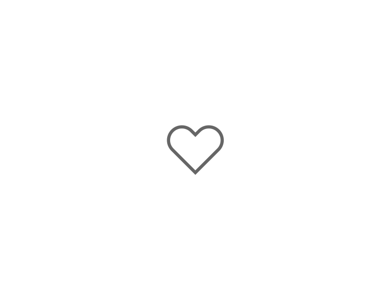

Emilio Béjar
@eabejar
Estoy siguiendo la carrera de desarrollo web porque me apasiona la tecnología y cómo interactaumos con ella. Nosotros los futuros desarrolladores moldearemos qué se puede hacer con la tecnología y avances como la inteligencia artificial. Tengo experiencia y me gusta el aseguramiento de la calidad en los productos de software.
